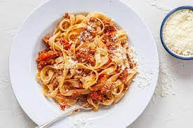

Bolognese

Description
Using the handmade pasta we made from our previous recipe, we will now make a bolognese sauce to accompany the dish. This bolognese sauce is from the region of bologna and is inspired by Evan Funke. The two recipes can be combined to create a fantastic dinner for 2.
Ingredients
- 1 medium onion
- 1 celery stalk
- 1 carrot
- 3 Tbsp. Olive Oil
- 1 lb. ground chuck
- Kosher salt
- 3 oz. pancetta
- 1 cup white wine
- 1/3 cup tomato paste
- 2 cups chicken stock
- 1 cup milk
- 2 oz Parmesan
Steps
- Pulse onion, celery, and carrot in a food processor until very finely chopped. Transfer to a small bowl.
- Heat oil in a Dutch oven or other large pot over medium. Break beef into small clumps (about 1½") and add to pot; season lightly with salt. Cook, stirring occasionally but not breaking meat apart, until beef is lightly browned but not crisp, 6 to 8 minutes. It may be gray in spots (that's okay!) and still a little pink in the center. Using a slotted spoon, transfer beef to a medium bowl.
- Wipe out pot. Cook pancetta in pot over medium heat, stirring occasionally, until pancetta has released some of its fat and is crisp, 6-8 minutes. Add onion mixture to pot and cook, stirring occasionally, until vegetables are very soft and beginning to stick to surface, 6-8 minutes.
- Return beef to pot and pour in wine. Reduce heat to medium-low and cook, smashing down on beef with a wooden spoon, until wine is evaporated, surface of pot is almost dry, and meat is finely ground, 12-15 minutes. (The meat should be reduced to what looks like little bits. It takes a bit of effort, but you can take breaks.) Add tomato paste, bay leaf, and nutmeg and cook, stirring occasionally and still pressing down on meat, until tomato paste is slightly darkened, about 5 minutes.
- Pour stock and milk into pot; add a pinch of salt. Reduce heat to the lowest setting and cook, uncovered and stirring occasionally, until meat is very, very tender, 2-2½ hours. There shouldn't be any rapid bubbles at this stage. Instead, the sauce should release the occasional small bubble or two. When finished, the sauce should have the texture of and look like a sloppy joe mixture. If the liquid reduces before the meat is completely tender, add an extra ½ cup stock and continue cooking. Discard bay leaf. Taste sauce and adjust seasoning with salt; keep warm.
- Cook the handmade pasta we made in the previous recipe.
- Combine pasta with sauce to enjoy!